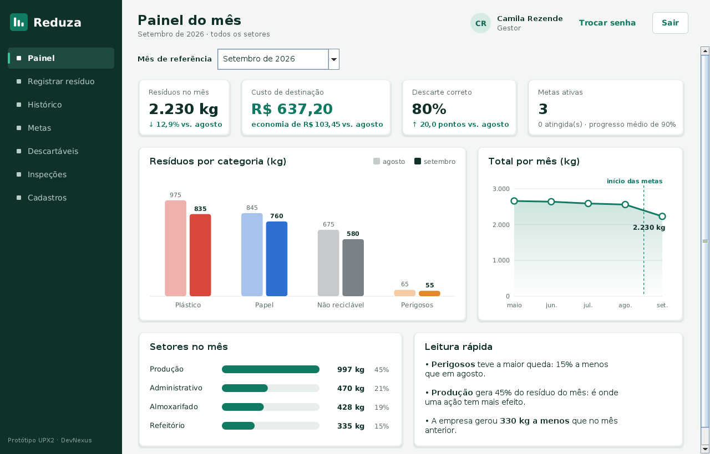

Gestão de resíduos para empresas • UPX2 Facens 2026
Reduza
Sua empresa já paga para jogar resíduo fora. O Reduza mostra, por setor, quanto resíduo a empresa gera e quanto isso custa: a destinação paga, as compras de descartáveis e o reciclável que vira rejeito por descarte errado.

O problema
O desperdício existe, mas ninguém vê o custo.
Quando alguém joga um copo com café no coletor de papel, o lote pode virar rejeito. A empresa paga para descartar o que poderia vender. Sem medir por setor, esse custo não aparece em nenhum relatório.
A Política Nacional de Resíduos Sólidos (Lei nº 12.305/2010) exige que empresas sujeitas ao plano de gerenciamento controlem e comprovem o destino dos seus resíduos. A multa por descarte irregular vai de R$ 5 mil a R$ 50 milhões.
O copo vai junto com o café
Copos descartáveis, inclusive os de papel, têm uma película plástica por dentro. Em contato com água a 85–90 °C, um copo de 100 ml liberou cerca de 25 mil micropartículas de plástico em 15 minutos. Trocar o descartável por uma caneca reduz o resíduo e essa exposição ao mesmo tempo.
Como funciona
Três etapas, do registro à redução.
Com os números, a empresa gasta menos e cumpre a lei com menos trabalho.
📝
Registrar
Cada setor informa o peso do resíduo por categoria: plástico, papel, não reciclável e perigosos. As compras de descartáveis entram pelo valor do pacote.
📊
Acompanhar
O painel mostra o total do mês, a variação em relação ao mês anterior, o setor que mais gera e o custo em reais.
♻️
Reduzir
A empresa define metas por setor e acompanha a economia em reais: menos rejeito pago, mais reciclável vendido e menos descartáveis comprados.
Implementação
Tecnologias utilizadas
O sistema Reduza é uma aplicação desktop em Java, com banco de dados MySQL. Esta página é HTML, CSS e JavaScript puros.
Java 17
Swing
MySQL
Maven
JUnit 5
HTML, CSS e JavaScript
Git e GitHub Pages
Arquitetura
Como a solução funciona
Cada setor registra o resíduo (setor, categoria, quilos e data) na aplicação Java. Os dados ficam no banco MySQL e alimentam o painel do mês, o histórico com filtros, as metas por setor e a exportação em CSV, que abre no Excel.
Setores
→
Aplicação Java
→
Banco MySQL
→
Painel e Relatórios
O sistema
Telas reais do protótipo
Escolha uma tela para ver o que ela faz.
Painel do mês
O resumo que o gestor abre primeiro: total do mês comparado com o anterior, custo de destinação em reais, taxa de descarte correto e setor que mais gera resíduo.
Dados fictícios de uma empresa exemplo, usados para demonstração.
Impacto
Resultados esperados e ODS
Menos resíduo para a empresa, mais saúde para quem trabalha nela. Descartar certo precisa ser fácil: o Reduza registra os pontos de coleta de cada setor e o resultado de inspeções simples do descarte, seguindo as cores dos coletores da Resolução CONAMA nº 275/2001.
ODS 12
Consumo e produção responsáveis
Também: ODS 3 (Saúde e bem-estar), ODS 8 (Trabalho decente e crescimento econômico), ODS 9 (Indústria, inovação e infraestrutura) e ODS 11 (Cidades e comunidades sustentáveis).
Equipe DevNexus
Quem está construindo o Reduza
Orientação: Profa. Brenda Medina • Mentoria: Prof. Daniel Ohata
M
Miguel
Gestor do projeto e engenheiro de software
R
Rafael
Redes e banco de dados
T
Thiago
Scrum Master e Product Owner
M
Marcos
Requisitos e viabilidade
L
Luciana
Front-end e back-end
Quer testar o Reduza na sua empresa?
O projeto está em desenvolvimento, com piloto em uma empresa da região de Sorocaba. Use o QR Code para abrir esta página no celular e acompanhe o andamento pelo repositório.